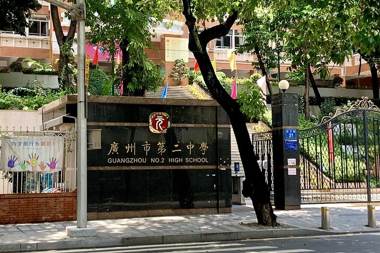

元风雅韵，南国名校——广州市第二中学深度巡礼
广州市第二中学（Guangzhou No.2 High School），这座屹立于岭南大地的教育殿堂，始建于1930年，其前身可追溯至清代著名的书院——学海堂。作为广州市首批国家级示范性普通高中、广东省一级学校，广州二中不仅承载着厚重的历史底蕴，更展现出蓬勃的现代生机。九十余载春风化雨，学校始终秉承“元”文化之精髓，坚守“义忠仁”的校训，为国家和社会输送了数以万计的优秀人才，被誉为“南粤名校，岭南明珠”。
一、 溯源问道：应元路上的历史丰碑
越秀山麓，百步梯前，广州二中应元校区不仅是学校的发祥地，更是广州近现代教育史的见证者。这里曾是学海堂的旧址，书香翰墨，代代相传。漫步校园，古木参天，碑刻林立，每一块砖瓦都仿佛在诉说着往昔的辉煌。应元路不仅是一个地理坐标，更是一种精神图腾，象征着二中人对学术的尊崇和对传统的坚守。
随着时代的发展，广州二中不断拓展办学空间。2005年，位于黄埔区科学城的苏元校区正式启用。如果不说应元校区是深沉的智者，那么苏元校区便是活力的少年。新校区占地广阔，布局宏大，现代化教学楼群与自然山水和谐共生，构筑了“山水学府，生态校园”的独特景观。一旧一新，一脉相承，共同诠释了二中“传承不守旧，创新不忘本”的发展理念。

二、 潜心治学：卓越品质的教学高地
“得天下英才而教育之”是二中人的宏愿，而“让每一位学生都成为最好的自己”则是二中人的承诺。学校拥有一支师德高尚、业务精湛的教师队伍，其中不乏特级教师、正高级教师以及省市级名师工作室主持人。他们深耕讲坛，严谨笃学，用智慧 and 爱心点亮了学生求知的明灯。
在教学上，广州二中倡导“深度学习”与“思维课堂”。学校不仅开齐开足国家课程，还依托“元”文化体系，开发了涵盖人文、科学、艺术、体育等领域的丰富校本课程。在数理化生信五大学科竞赛中，二中学子屡获国家级金银牌，成绩斐然；在每年的高考中，重本率与高优率始终稳居广州市前三甲，无数二中学子从这里走向清华、北大、牛津、剑桥等世界顶尖学府。课堂之内，是思维火花的激烈碰撞；课堂之外，是其乐融融的师生研讨。

三、 多元并通过：活力四射的社团文化
如果说成绩是二中的硬实力，那么丰富多彩的校园文化则是二中的软实力。学校坚持“五育并举”，致力于培养具有家国情怀、国际视野、创新精神和实践能力的复合型人才。这里的每一面墙壁都会说话，每一草一木都含情，校园本身就是一本生动的教科书。
二中的社团活动闻名遐迩，现有一百多个学生社团，涵盖学术、科技、公益、艺术、体育五大类。一年一度的“体艺节”是全校师生的狂欢节，田径场上矫健的身姿，舞台上优美的舞步，无不彰显着青春的活力。此外，科技节、读书节、戏剧节等活动轮番上演，为学生提供了广阔的展示舞台。在这里，学生不仅是知识的接收者，更是文化的创造者。模拟联合国社团在国际舞台上发出中国声音，无线电测向队在全国赛场上摘金夺银——二中学子的身影，活跃在世界的各个角落。

四、 守正创新：面向未来的现代化校园
面向未来，广州二中正以开放的姿态拥抱世界。学校大力推进智慧校园建设，图书馆、实验室、创客空间等现代化设施一应俱全。图书馆藏书丰富，环境优雅，是学生心灵的栖息地；科学楼内，高端的实验设备为培养未来的科学家提供了坚实的硬件支撑。
漫步在苏元校区，你会被这里优美的环境所吸引。中心广场上，标志性的“元”雕塑在阳光下熠益生辉，象征着万物之始，生生不息。校园内绿树成荫，湖光潋滟，人与自然和谐相处。这种环境育人的理念，潜移默化地陶冶着学生的情操。无论是在静谧的图书馆博览群书，还是在宽阔的运动场挥洒汗水，二中学子通过在优美的环境中成长，终将成长为社会的栋梁。

结语
九十载风雨兼程，九十载薪火相传。广州市第二中学正如一艘巨轮，承载着无数家庭的希望，乘风破浪，驶向更加辉煌的明天。这里是梦想起航的地方，是青春绽放的沃土。我们相信，在“元”文化的引领下，二中人将继续书写属于自己的教育华章！